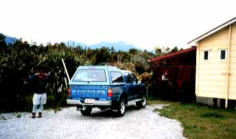
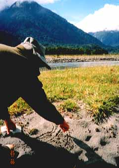
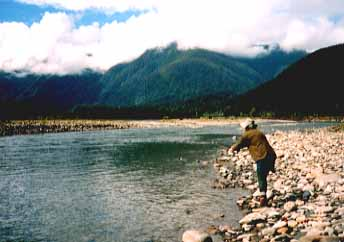
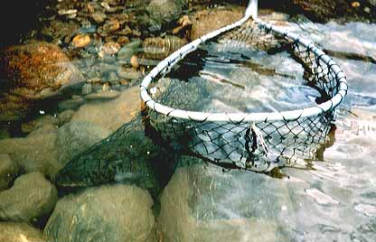
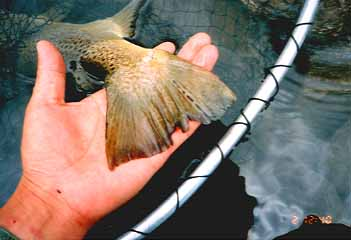

写真集
98/12/02 ブラウントラウトと再会

海辺のロッジへ
ヘリポートから海辺にあるロッジへ戻って暖かなシャワーのある心地よい一晩を過ごしました。
このロッジはホキティカの町にあるホキティカ・アングリング・クラブ所有の、釣りのためのロッジだそうです。
これから出かける三日目の釣りは、牧場の中を通って入っていく山岳渓流だそうです。

いいかい、こうしてこの流れの筋を.....
いよいよ河原に着いて、釣り始める前にブリントさんがコーチをしてくれました。主流とその両脇の筋に丁寧にロイヤルウルフを流して攻めろ、とのこと。
今日の川は、海辺から比較的近いのですが、すぐに高い山が迫って見えます。

模範演技
ブリントさんが模範演技を見せてくれました。
彼があの腕っ節で９ft６番のロッドを振ると、ひゅんひゅんとまるで鉛筆でも振っているように見えます。

岸よりの淀みで
本流の脇の淀みでブラウンがライズしているのをブリントさんと川本君が見つけてくれました。
二人の指示に従いロイヤルウルフを投げると、穏やかな水面からずいーっと浮き上がってゆっくりフライをくわえました。
１、２、３のよーん！ぐらいで合わせると、バッチリかかりました。

彼の尻尾
約２年ぶりに出会えたブラウンをしげしげと眺めます。
この１尾は比較的おとなしく上がって来ました。なかなか年をとった古参の１尾のようです。
写真集 目次へ
サイトマップ
ホームへ
お問い合わせ